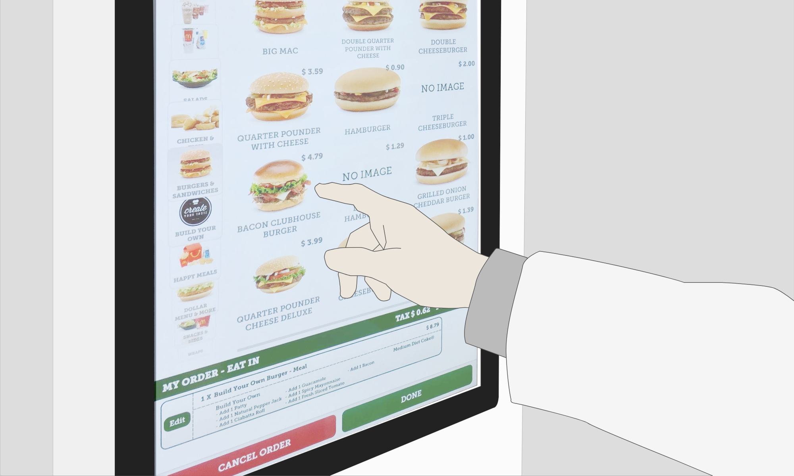
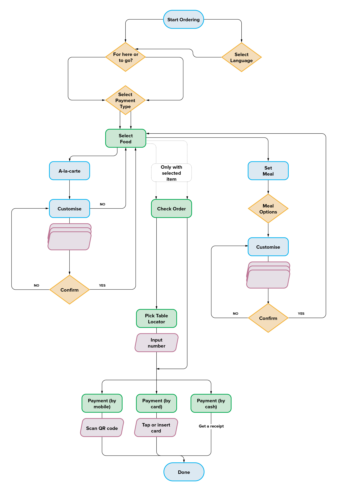
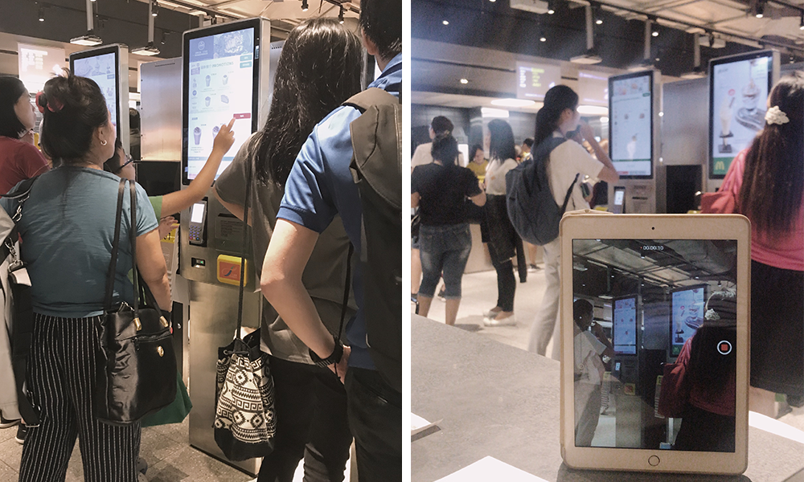
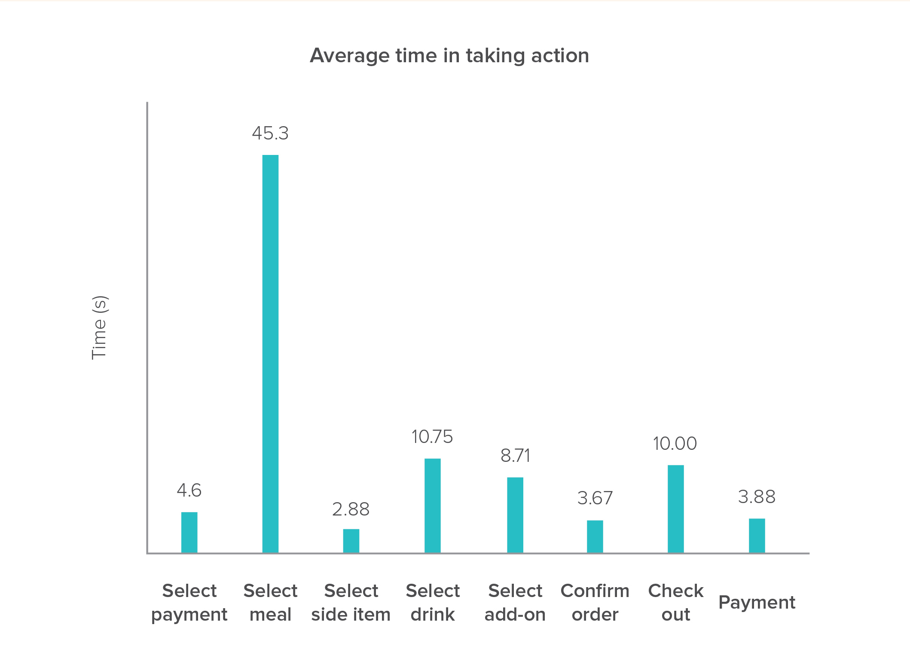
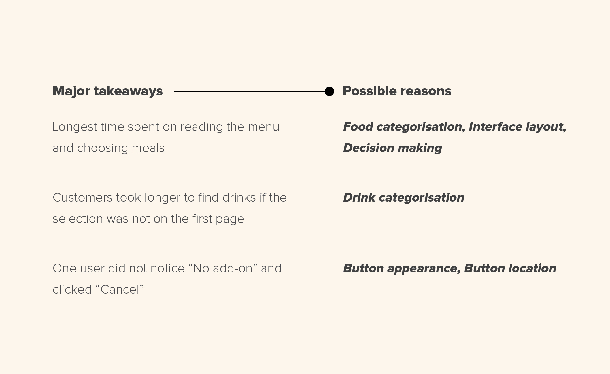
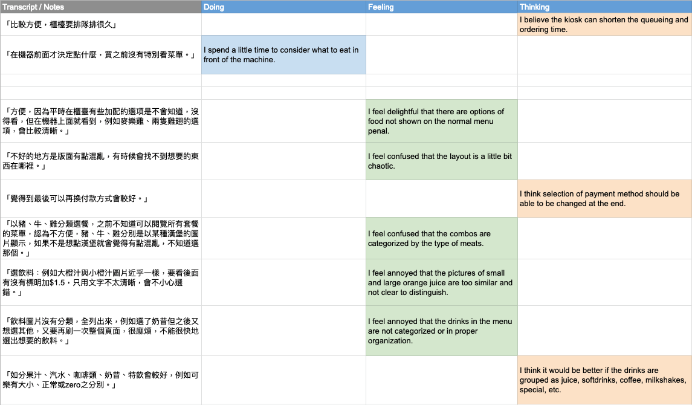
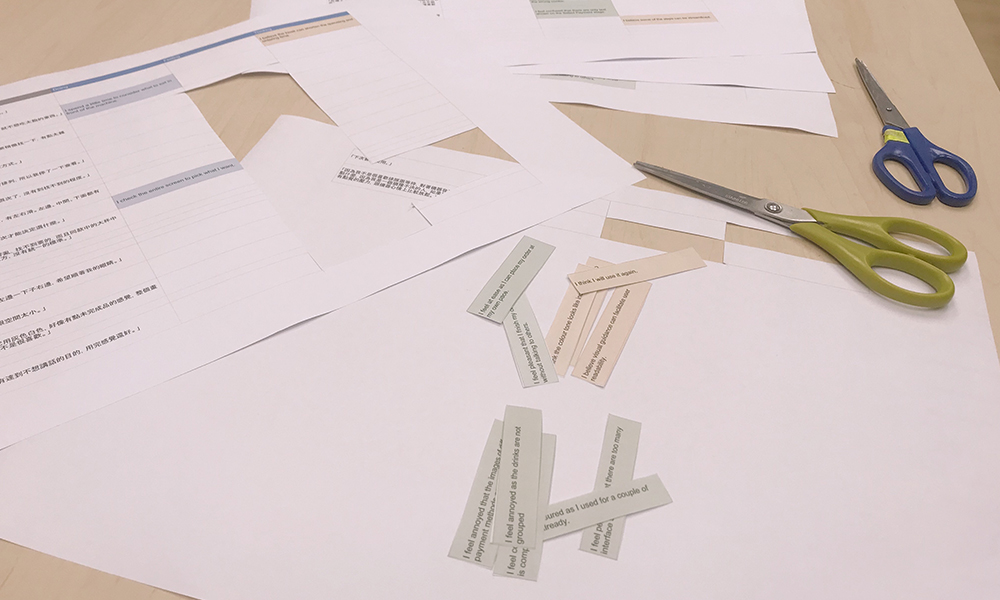
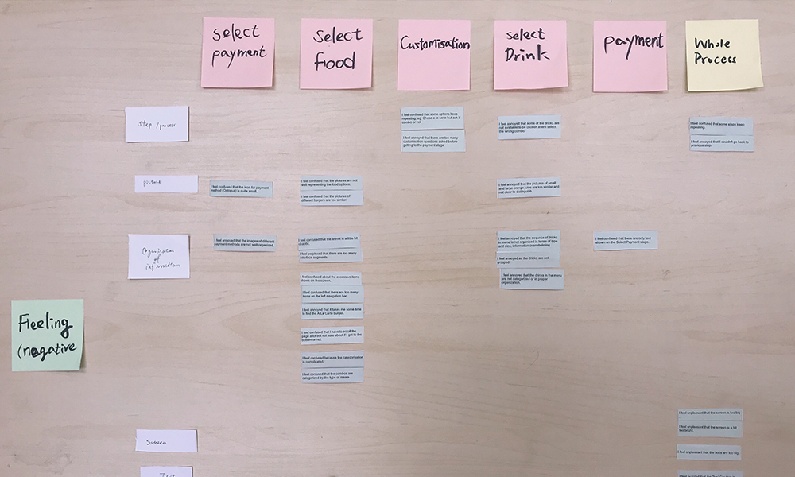
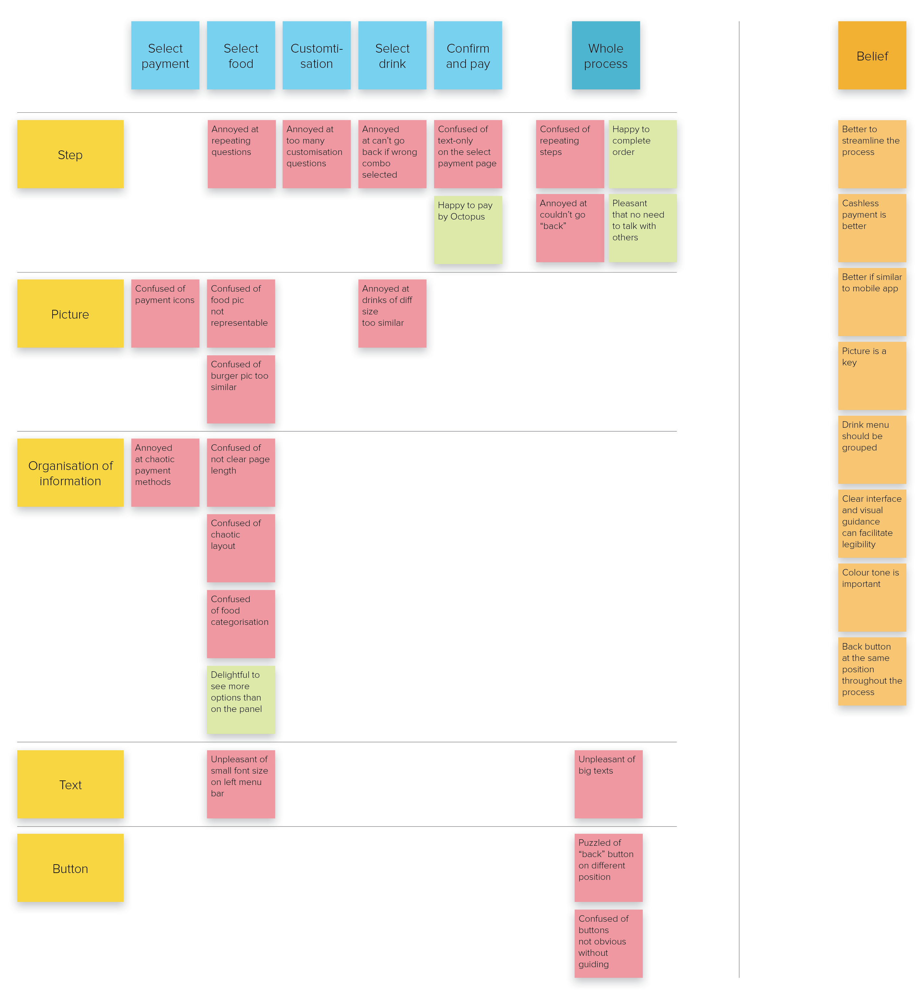
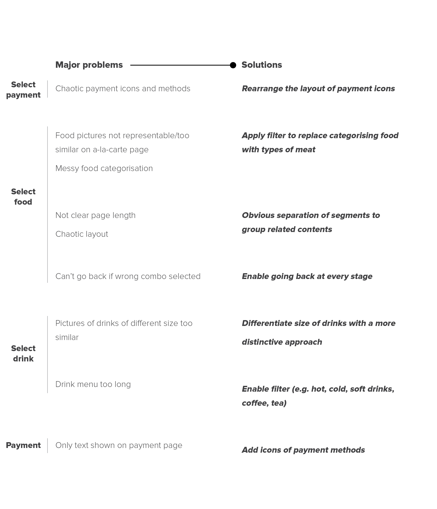

UX Redesign Challenge

In 2015, self-ordering has been available in Hong Kong’s McDonald’s since the launch of its kiosk. As an experimental side project, I work with a teammate to refine its kiosk ordering experience since it is not user-friendly at the moment. Our aim is to simplify the user experience by eliminating distracting elements and focusing on key interactions and effective navigations.
There was a time my teammate and I were ordering our dinner at the kiosk in McDonald’s. However, the process was not as smooth as expected, and off the top of our heads, we wondered how might we improve its user experience?
Initially, we tested every button and option at the kiosk and generated the flowchart of the ordering process. This provided us a clear picture of all the steps encompassed in the system.

At this stage, we observed the ordering process of 11 customers and recorded their time taken. We also noted down the steps that made customers confused and hesitated, which in turn increased the ordering time.
Since the majority of customers ordered set meals, the analysis of time taken in ordering process targeted mainly on meals. The observation result prepared us for the next interview stage in terms of the scope of the study.



After observation was done, we interviewed 5 customers who encountered difficulties in their ordering processes to look for the problems at each stage as well as their feelings accordingly, as consideration of feelings is crucial to provide a delightful user experience.
The transcripts were simplified and translated into “Doing”, “Feeling” and “Thinking”. The feelings were further classified as positive and negative, revealing the problems that customers found in specific steps.

Analysis of transcript by categorising into “Doing”, “Feeling” and “Thinking”

Cutting of transcripts for categorisation

Categorisation of “Negative Feeling” during each stage of the process
We analysed the data collected and generated an experience map, which illustrated the negative and positive emotions that users feel at each stage of the process regarding step, picture, organisation of information, text and button, whereas the beliefs uncovered what users considered important.
The experience map helped us progress to the next brainstorming stage to prioritise the problems and explore the possible directions for the redesign.


As the project is still in progress, we have made a clear plan for the steps ahead.
In the next stage, we will explore the user flow and layout of design using low fidelity prototype. Making several variations will facilitate us to find out the most desirable solutions.
Making a high fidelity prototype can help us visualise the complete layout and ensure that it gives clear visual guidance for users to take action.
We will invite users to test the prototype regularly to see if the redesign solve the major problems we discovered in the research stage. For doing so, we plan to assign them to complete a designated order using the existing system and our prototype accordingly. Therefore, we can make a comparison of the time being used and listen to their opinions which help us finalise our design.
The ultimate goal of this project is to learn through experience. We hope to invite some experienced UX designers to review our works and give us valuable advice to further improve our skills in designing the user experience.